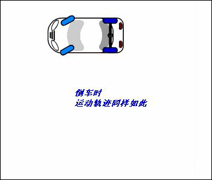
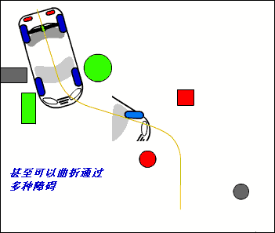
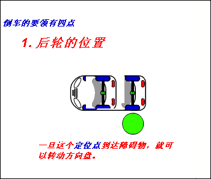
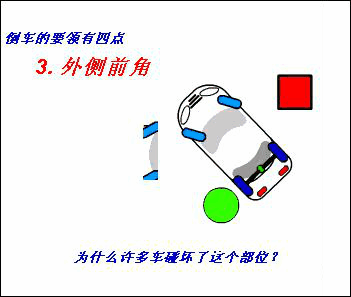
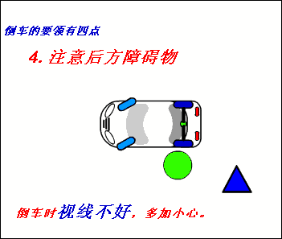
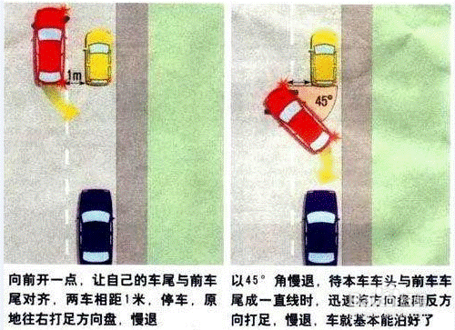

倒车原理、要领、常见情形
1 倒车原理
1.1 绝大多数汽车都是前轮作为-转向轮-，而后轮不能改变方向。

1.2 不难发现前轮轨迹的半径大于后轮轨迹的半径，因为汽车的旋转中心在后桥的中央，倒车时运动轨迹同样如此。


1.3 你不可能以前进的方式进入狭小的空间，因为后轮不能左右移动，相反，你却可以后退的方式进入，倒车甚至可以曲折通过多重障碍。当然要根据当时的环境选择进还是倒。



END
2 倒车要领 ↑
2.1 后轮的位置，如下图。

2.2 贴近障碍物，如下图。

2.3 外车前角，如下图，不要顾腚不顾头，这就是车右前方经常撞的原因。

2.4 倒车要点四，注意后方障碍物。这个是最基本和最容易大意的地方。

END
3 常见倒车情形 ↑
3.1 能停车的地方在最里面时。

3.2 只能停下一辆时。

3.3 斜式停车场停车时。
3.4 车位与行驶方向垂直时。

3.5 车位与行驶方向平行时。

END